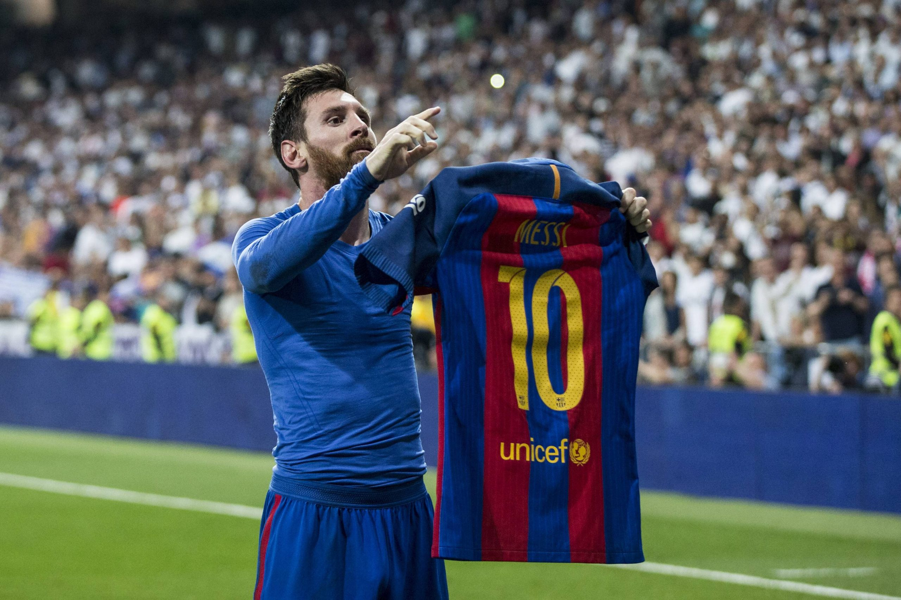

Club Legends
Informatie (van Latijn informare: "vormgeven, vormen, instrueren") is alles wat kennis toevoegt en zo onwetendheid, onzekerheid of onbepaaldheid vermindert. Strikt genomen is informatie pas informatie als die interpreteerbaar is. Interpreteren en integreren van informatie resulteert in kennis. Er verschenen in de loop van de tijd honderden definities van het begrip. Dit komt doordat een aantal (sub)wetenschappen en toepassingsgebieden het verschillend gebruiken. Informatie wordt overgedragen via communicatie. Wie een boodschap overdraagt is de zender en wie de boodschap ontvangt is de ontvanger. Meestal is er tweerichtingsverkeer.